<!DOCTYPE html>

<!-- Mirrored from www.bogotobogo.com/cplusplus/assembly.php by HTTrack Website Copier/3.x [XR&CO'2014], Mon, 11 Dec 2017 15:03:24 GMT -->
<head>
  <title>C++ Tutorial: Taste of Assembly - 2017</title>
  <meta content="C++ Tutorial: Taste of Assembly" name="description" />
  <meta content="C++ Tutorial, Pointers, linker vs loader, Assembly, Heap, Stack, Register, ALU, Stack Pointer(sp), Fram Pointer(fp), memory layout, objdump, elf, a.out" name="keywords" />
  <meta name="viewport" content="width=device-width, initial-scale=1">

  <link href="http://netdna.bootstrapcdn.com/bootstrap/3.0.0/css/bootstrap.no-icons.min.css" rel="stylesheet">
  <link href="http://netdna.bootstrapcdn.com/font-awesome/4.0.3/css/font-awesome.css" rel="stylesheet">
  <link rel="stylesheet" href="http://fonts.googleapis.com/css?family=Alice|Open+Sans:400,300,700">
  <link rel="stylesheet" href="../public/css/app.css">
  <link rel="stylesheet" href="../public/css/styles.css">
  <link rel="stylesheet" href="../public/css/bogostyleWidePreNew.css">
</head>

<body class="home">
    <nav class="navbar navbar-default navbar-fixed-top">
    <div class="container-fluid">      
      <div class="navbar-header">
        <!--<button type="button" class="navbar-toggle collapsed" data-toggle="collapse" data-target="#navbar" aria-expanded="false" aria-controls="navbar"> -->
        <button type="button" class="navbar-toggle collapsed" data-toggle="collapse" data-target=".navbar-collapse" aria-expanded="false" aria-controls="navbar"> 
          <span class="sr-only">Toggle navigation</span> 
          <span class="icon-bar"></span> 
          <span class="icon-bar"></span> 
          <span class="icon-bar"></span> 
        </button>
        <a class="navbar-brand" href="../index-2.html">BogoToBogo</a>
      </div>
      
      <div class="navbar-collapse collapse">
        
        <ul class="nav navbar-nav">
          <li class="active"><a href="../index-2.html">Home</a></li>
          <li><a href="../about_us.html">About</a></li>
          <li><a href="../Hadoop/BigData_hadoop_Install_on_ubuntu_single_node_cluster.html">Big Data</a></li>
          <li><a href="../python/scikit-learn/Artificial-Neural-Network-ANN-1-Introduction.html">Machine Learning</a></li>
          <li><a href="../AngularJS/AngularJS_Introduction.html">AngularJS</a></li> 
          <li><a href="../python/pytut.html">Python</a></li>
          <li><a href="cpptut.html">C++</a></li>
          <li><a href="../DevOps/DevOps_Jenkins_Chef_Puppet_Graphite_Logstash.html">DevOps </a></li>
          <li><a href="../Algorithms/algorithms.html">Algorithms</a></li> 
          <li class="dropdown">
            <a href="#" class="dropdown-toggle" data-toggle="dropdown">More...<b class="caret"></b></a>
            <ul class="dropdown-menu">
           
              <li><a href="../Qt/Qt5_Creating_QtQuick2_QML_Application_Animation_A.html">Qt 5</a></li>                           
              <li><a href="../Android/android.html">Android</a></li>
              
              <li><a href="../Linux/linux_tips1.html">Linux</a></li>
              <li><a href="../Java/tutorials/on_java.html">Java</a></li>
              <li><a href="../CSharp/.netframework.html">CSharp</a></li>
              <li><a href="../VideoStreaming/videostreaming_etc.html">Video Streaming</a></li>
              <li><a href="../FFMpeg/ffmpeg_fade_in_fade_out_transitions_effects_filters_slideshow_concat.html">FFmpeg</a></li>
              <li><a href="../Matlab/Matlab_Tutorial_Manipulating_Audio_I_Reverse_Delay_Tone_Control_Changing_Speed_Removing_Vocals.html">Matlab</a></li>
              <li><a href="../python/Django/Python_Django_Forums_Shared_Host.html">Django 1.8</a></li>
              <li><a href="../Laravel5/Laravel5_ToDo_List_Sample.html">Laravel 5.2</a></li>
              <li><a href="../RubyOnRails/RubyOnRails.html">Ruby On Rails</a></li>
              <li><a href="../HTML5/HTML5_Tutorial.html">HTML5 & CSS</a></li>
              <li><a href="../AmazingPlaces/index.html" target="_blank">
Earth</a> </li>
            </ul>
          </li>
        </ul>      
      </div>
    </div>  
  </nav>  

  <div id="main">
    <div class="container">
      <div class="row section featured topspace">
        <div class="row">
          <div class="col-sm-9 col-md-9 col-xs-9">
            <h2 class="section-title">C++ Tutorial - Taste of Assembly - 2016   
    <g:plusone></g:plusone></h2>
            <div class="icon-image">
                 
            </div>
            <div class="SocialLinks">
  <span class='st__large' displayText=''></span>
  <br><br>
  <div align="center">
  <span class='st_facebook_large' displayText='Facebook'></span>
  <span class='st_twitter_large' displayText='Tweet'></span>
  <span class='st_linkedin_large' displayText='LinkedIn'></span>
  </div>
  <br><br>
  <script type="text/javascript" src="http://w.sharethis.com/button/buttons.js"></script>
  <script type="text/javascript">stLight.options({publisher: "b9569c43-5f56-4501-92f0-4bf4aa8fceb0", doNotHash: false, doNotCopy: true, hashAddressBar: false});</script>
</div>

<div id="bookmarkshare">
  <script type="text/javascript">var addthis_config = {"data_track_clickback":true};</script>
  <a class="addthis_button" href="http://www.addthis.com/bookmark.php?v=250&amp;username=khhong7"></a>
  <script type="text/javascript" src="http://s7.addthis.com/js/250/addthis_widget.js#username=khhong7"></script>
</div>

<br>
<hr>
<br>


<!-- Google bogo1 ad -->
<!-- Google search box -->


<!-- bogo1 -->
<div>
  <script async src="http://pagead2.googlesyndication.com/pagead/js/adsbygoogle.js"></script>
  <!-- bogo1 -->
  <ins class="adsbygoogle"
     style="display:inline-block;width:728px;height:90px"
     data-ad-client="ca-pub-4716428189734495"
     data-ad-slot="6542308167"></ins>
  <script>
   (adsbygoogle = window.adsbygoogle || []).push({});
  </script>
</div>


<!-- Google search box -->
<div class="AdSenseSearch">
  bogotobogo.com site search:
  <form action="http://www.google.com/" id="cse-search-box" target="_blank">
    <div>
      <input type="hidden" name="cx" value="partner-pub-4716428189734495:1794050961" />
      <input type="hidden" name="ie" value="UTF-8" />
      <!--<input type="text" name="q" size="55" />-->
      <input type="text" name="q" size="" width="90%"/>
      <input type="submit" name="sa" value="Search" />
    </div>
  </form>
  <script type="text/javascript" src="http://www.google.com/coop/cse/brand?form=cse-search-box&amp;lang=en"></script>
</div>


<hr>
            <br><br><br>
<div class="subtitle" id="main_assembly">Binary Machine Code</div>
<br/>
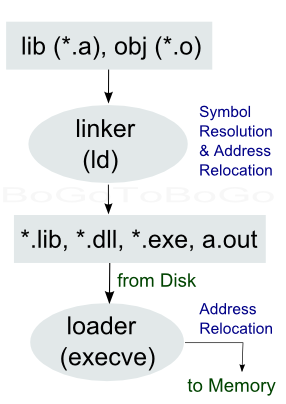
<br/>
<p>Here is the most simplest C code:</p>

<!-- Google bogo_square_ad -->
<div>
  <script type="text/javascript">
    google_ad_client = "ca-pub-4716428189734495";
    /* bogo_LargeRectangle_336_280 */
    google_ad_slot = "2712696561";
    google_ad_width = 336;
    google_ad_height = 280;
  </script>
  <script type="text/javascript"
    src="http://pagead2.googlesyndication.com/pagead/show_ads.js">
  </script>
</div>
<br>


<pre>
// main.c
int main()
{
   return 0;
}
</pre>
<p>After we do:</p>
<pre>
$ gcc main.c
</pre>
<p>we get <strong>a.out (Assembler Output)</strong>, and if we open it with an editor, what we see is something like this:</p>
<pre>
^?<font color="red">ELF</font>^A^A^A^@^@^@^@^@^@^@^@^@^B^@^C^@^A^@^@^@~@~B^D^H4^@^@^@  ...
^@^@^@^D^@^@^@/lib/ld-linux.so.2^@^@^D^@^@^@^P^@^@^@^A^@^@^@
GNU^@^@^@^@^@^B^@^@^@^F^@^@^@   ......
....
</pre>
<p>The <strong>a.out</strong> is one of the output <strong>file format</strong>s. But as we see from the editor
it's now written using ELF (Executable and Linkable Format) format in most of the linux systems.</p>
<p>Actually, executable code is created by the compiler and the linker, but it's the <strong>linker</strong> that puts things in the binary format. On Linux, this format is typically <strong>ELF</strong>, on Windows it's <strong>PE (Portable Executable)</strong>, a modified version of the Unix <strong>COFF</strong> file format, including object code and DLLs, and on Mac OS X it's <strong>Mach-O</strong>.</p>
<p>It contains metadata, and multiple sections of code and data. They will be loaded into memory. The <strong>a.out</strong> is written that's can not be easily read , however, if we use <strong>objdump</strong>, we can see how the <strong>a.out</strong> looks like after being translated machine code for the <strong>main()</strong> function.</p>
<pre>

$ objdump -D a.out | grep -A20 main.:

08048354 <main>:
 8048354:       8d 4c 24 04             lea    0x4(%esp),%ecx
 8048358:       83 e4 f0                and    $0xfffffff0,%esp
 804835b:       ff 71 fc                pushl  0xfffffffc(%ecx)
 804835e:       55                      push   %ebp
 804835f:       89 e5                   mov    %esp,%ebp
 8048361:       51                      push   %ecx
 8048362:       b8 00 00 00 00          mov    $0x0,%eax
 8048367:       59                      pop    %ecx
 8048368:       5d                      pop    %ebp
 8048369:       8d 61 fc                lea    0xfffffffc(%ecx),%esp
 804836c:       c3                      ret
 804836d:       90                      nop
 804836e:       90                      nop
 804836f:       90                      nop

08048370 &lt;__libc_csu_fini&gt;:
 8048370:       55                      push   %ebp
 8048371:       89 e5                   mov    %esp,%ebp
 8048373:       5d                      pop    %ebp
 8048374:       c3                      ret
</main></pre>
<p>The binary <strong>a.out</strong>'s instructions are written in machine language that CPU can understand. Compilers are designed to translate C code into machine language for a variety of processor architectures. In our case, the processor is in a family of using <strong>x86</strong> architecture (xeon)</p>
<pre>
$ cat /proc/cpuinfo
processor       : 0
vendor_id       : GenuineIntel
cpu family      : 6
model           : 23
model name      : Intel(R) Xeon(R) CPU           E5405  @ 2.00GHz
stepping        : 6
cpu MHz         : 1995.080
cache size      : 6144 KB
....
</pre>
<p>Each architecture has a different machine language, so the compiler acts as a middle man, translating C code into machine language for the target architecture. </p>
<p>Let's look more detail about out compiled executable binary for the <strong>x86</strong> architecture.</p>
<p>The <strong>objdump</strong> here is piped into <strong>grep</strong> so that the output has only show 20 lines after the <strong>main.:</strong>. In the output, each byte is represented in hexadecimal.</p>
<p>The hexadecimal numbers, starting with <strong>0x08048354</strong> on the far left, are memory addresses. We'll look each machine instructions later, but for now, let's look at the register info using GDB:</p>
<pre>
$ gcc -g main.c
$ gdb -q ./a.out
Using host libthread_db library "/lib/libthread_db.so.1".
(gdb) break main
Breakpoint 1 at 0x8048362: file main.c, line 3.
(gdb) run
Starting program: /home/a.out

Breakpoint 1, main () at main.c:3
3               return 0;
(gdb) info registers
eax            0xbfec4204       -1075035644
ecx            0xbfec4180       -1075035776
edx            0x1      1
ebx            0x4a571ff4       1247223796
esp            0xbfec4164       0xbfec4164
ebp            0xbfec4168       0xbfec4168
esi            0x4a430ca0       1245908128
edi            0x0      0
eip            0x8048362        0x8048362 <main+14>
eflags         0x282    [ SF IF ]
cs             0x73     115
ss             0x7b     123
ds             0x7b     123
es             0x7b     123
fs             0x0      0
gs             0x33     51
(gdb)
</main+14></pre>
<p>The bit of the machine language instructions must be put into <strong>memory</strong>, and the layout of the memory is shown in the next section.</p>
<br/>
<br/>
<div class="subtitle" id="memorydiagram_layout">Memory Layout</div>
<br/>
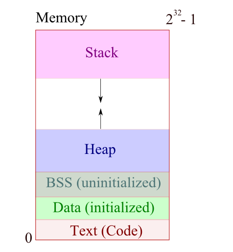
<br/>
<br/>

<br/>
<br/>
<p>The picture above is the <strong>memory diagram</strong>, in which memory is
divided into several regions. </p>
<p>Local variables declared as part of a procedure or function appear on the
top part of the diagram, which represents the <strong>stack storage</strong> or <strong>automatic storage</strong>.<br/> Also, stack is the place where function parameters are stored. Stack is also used for storing the return address of the calling functions, and stack keeps the register contents and return address when an interrupt service routine is called.</p>
<p>
Modern architectures typically assign lower memory
addresses to addresses in the heap than they do to addresses the stack. </p>
<p>We have other regions in the diagram:<br/>
<strong>Data</strong> region stores <strong>global/static</strong> variables. When we start a C++ program, the compiler sets aside memory for our code (<strong>code storage</strong> or <strong>text storage</strong>), and the compiled <strong>assembly</strong> resides in the <strong>Code </strong> segment.</p>
<p>In C, statically-allocated variables without an explicit initializer are initialized to zero or a null pointer. Implementations of C typically represent zero values and null pointer values using a bit pattern consisting solely of zero-valued bits. Hence, the <strong>bss (block started by symbol/block storage segment)</strong> section typically includes all uninitialized variables declared at the file level (outside of any function) as well as uninitialized local variables declared with the static keyword.</p>
<p>The rest of the computer's memory is available for other uses. It is free. It is <strong>free store</strong>, and also called <strong>heap</strong>. Dynamically allocated memory created using the <strong>new/malloc</strong> operator appears on the bottom of the diagram, which represents the region of memory
called the <strong>heap</strong>.
<br/>
<br/>
<br/>
<br/>
<div class="subtitle" id="heap_memory">Heap Memory</div>
<p><strong>Heap</strong> memory, also known as <strong>dynamic</strong> memory, is an alternative to local <strong>stack</strong>
memory. Local memory is so automatic that it is allocated automatically on
function call and it is deallocated automatically when a function exits. Heap memory is
different in every way. The programmer explicitly requests the allocation of a memory
<strong>block</strong> of a particular size, and the block continues to be allocated until the programmer
explicitly requests that it be deallocated. Nothing happens automatically. So the
programmer has much greater control of memory, but with greater responsibility since
the memory must now be actively managed. </p>
<p>The <strong>advantages</strong> of heap memory:</p>
<ol>
<li><strong>Lifetime</strong>:<br/>
 Because the programmer now controls exactly when memory is
allocated and deallocated, it is possible to build a data structure in
memory, and return that data structure to the caller. This was never
possible with local memory which was automatically deallocated when the
function exited.
</li>
<br/>
<li><strong>Size</strong>: <br/>
 The size of allocated memory can be controlled with more detail.
For example, a string buffer can be allocated at run-time which is exactly
the right size to hold a particular string. With local memory, the code is
more likely to declare a buffer size 1000 and hope for the best. 
 </li>
</ol>
<p>The <strong>disadvantages</strong> of heap memory:</p>
<ol>
<li><strong>More Work</strong>: <br/>
 Heap allocation needs to be arranged explicitly in the code
which is just more work.
 </li>
<br/>
<li><strong>More Bugs</strong>: <br/>
 Because it's now done explicitly in the code, realistically on
occasion the allocation will be done incorrectly leading to memory bugs.
Local memory is constrained, but at least it's never wrong.
</li>
</ol>
<p>However, there are many problems that can only be solved with heap memory, so
that's that way it has to be. In languages with garbage collectors such as LISP and 
Java, the above disadvantages are mostly eliminated. The garbage collector takes over
most of the responsibility.</p>
<br/>
<br/>
<div class="subtitle_2nd" id="heap_allocation">heap allocation</div>
<p>The heap is a large area of memory available for use by the program. The program can
request <strong>blocks</strong> of memory for its use within the heap. In order to allocate a
block of some size, the program makes an explicit request by calling the heap allocation
function. The allocation function reserves a block of memory of the requested size in the
heap and returns a pointer to it. </p>
<p>Suppose a program makes three allocation requests to
25 allocate memory to hold three separate images in the heap each of which takes 1024
bytes of memory. </p>
<p>Each allocation request reserves a contiguous area of the requested size in the heap and
returns a pointer to that new block to the program. Since each block is always referred to
by a pointer, the block always plays the role of an object that the pointer can points to and the program
always manipulates its heap blocks through pointers. The heap block pointers are
sometimes known as <strong>base address</strong> pointers since by convention they point to the base, 
lowest address byte, of the block.</p>
<p>In this example, the three blocks have been allocated contiguously starting at the bottom
of the heap, and each block is 1024 bytes in size as requested. In reality, the heap
manager can allocate the blocks wherever it wants in the heap so long as the blocks do
not overlap and they are at least the requested size. At any particular moment, some areas
in the heap have been allocated to the program, and so are <strong>in use</strong>. Other areas have yet
to be committed and so are <strong>free</strong> and are available to satisfy allocation requests. The
heap manager has its own, private data structures to record what areas of the heap are
committed to what purpose at any moment The heap manager satisfies each allocation
request from the pool of free memory and updates its private data structures to record
which areas of the heap are in use.</p>
<br/>
<br/>
<div class="subtitle_2nd" id="heap_deallocation">heap deallocation</div>
<p>When the program is finished using a block of memory, it makes an explicit deallocation
request to indicate to the heap manager that the program is now finished with that block.</p>
<p>The heap manager updates its private data structures to show that the area of memory
occupied by the block is free again and so may be reused to satisfy future allocation
requests. </p>
<p>After the deallocation, the pointer continues to point to the now deallocated block. The
program must not access the deallocated object. The pointer is there, but it must not be used. 
Sometimes the code will set the pointer to
<strong>NULL</strong> immediately after the deallocation to make explicit the fact that it is no longer
valid.</p>
<br/>
<br/>
<div class="subtitle_2nd" id="heap_summary">heap - summary</div>
<ol>
<li>The heap is an area of memory available to allocate <strong>blocks</strong> of
memory for the program.
  </li><br/>
<li>There is some <strong>heap manager</strong> library code which manages the heap for
the program. The programmer makes requests to the heap manager, which
in turn manages the internals of the heap. In C, the heap is managed by the
ANSI library functions <strong>malloc()</strong>, <strong>free()</strong>, and <strong>realloc()</strong>.
 </li><br/>
<li> The heap manager uses its own private data structures to keep track of
which blocks in the heap are <strong>free</strong> and which blocks
are currently in use by the program and how large those blocks are.
Initially, all of the heap is free.
</li><br/>
<li>The heap may be of a fixed size, or it may
appear to be of a fixed but extremely large size backed by virtual memory.
In either case, it is possible for the heap to get <strong>full</strong> if all of its memory
has been allocated and so it cannot satisfy an allocation request. The
allocation function will communicate this runtime condition in some way
to the program - usually by returning a <strong>NULL</strong> pointer or raising a
language specific runtime exception.
</li><br/>
<li>The allocation function requests a block in the heap of a particular size.
The heap manager selects an area of memory to use to satisfy the request,
marks that area as <strong>in use</strong> in its private data structures, and returns a
pointer to the heap block. <br/>
The caller is now free to use that memory by
dereferencing the pointer. The block is guaranteed to be reserved for the
sole use of the caller - the heap will not hand out that same area of
memory to some other caller. The block does not move around inside the
heap - its location and size are fixed once it is allocated. <br/>
Generally, when
a block is allocated, its contents are random. The new owner is responsible
for setting the memory to something meaningful. Sometimes there is
variation on the memory allocation function which sets the block to all
zeros (<strong>calloc()</strong> in C).
</li><br/>
<li> The deallocation function is the opposite of the allocation function. The
program makes a single deallocation call to return a block of memory to
the heap free area for later reuse. Each block should only be deallocated
once. The deallocation function takes as its argument a pointer to a heap
block previously furnished by the allocation function. The pointer must be
exactly the same pointer returned earlier by the allocation function, not
just any pointer into the block. After the deallocation, the program must
treat the pointer as <strong>bad</strong> and not access the deallocated object.
 </li>
</ol>
<br/>
<br/>
<br/>
<div class="subtitle" id="stacks">Stack</div>
<p>Let's look at the following example and see how the local variables are set in the <strong>stack</strong> area:</p>
<pre>
void f1()
{
	int a;
	short b[4];
	double c;
	f2();
	f3();
}	
</pre>
<p>When we call f1() function, space needs to be set aside. The following picture shows <strong>activation records/stack frame</strong>:</p>
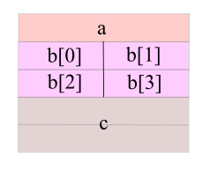
<br/>
<p>When the function <strong>f1()</strong> is called, the <strong>stack pointer</strong> will be decremented by 20 bytes which is the size of the variables of <strong>f1()</strong>.</p>
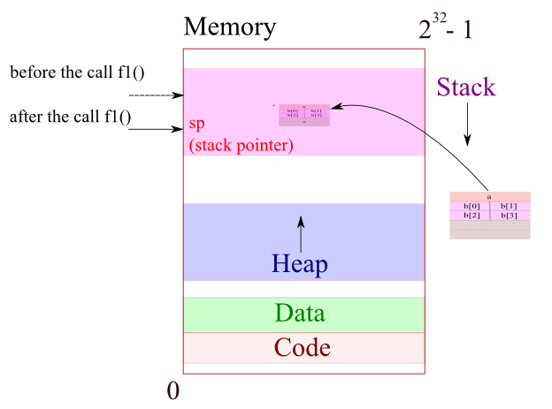
<br/>
<pre>
void f2()
{
	int x;
	char *y;
	char *z[2];
	f3();
}

void f3()
{
	double m[3];
	int n;
}
</pre>
<p>The following diagram shows the movement of <strong>stack pointer, sp</strong>: f1()-&gt;f1.f2()-&gt;f2.f3()-&gt;f2.f3() exits-&gt;f1.f2() exits.</p>
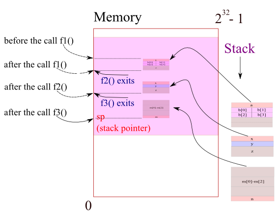
<p>After the f1.f2(), when we call f1.f3(), the variables of the function f3() simply overwrites them onto the area where the variables of f2() were.</p>
<br/>
<br/>
<div class="subtitle" id="mockassembly">Mock Assembly</div>
<p>This section introduces assembly, not the real one but the conceptual assembly just to learn how the stack is manipulated.</p>
<p>So, in this section, we're not going to use real names of registers such as Accumulator (EAX), Counter (ECX), Data (EDX), Base (EBX), Stack Pointer (ESP), Base Pointer (EBP), Source Index (ESI), and Destination Index (EDI) registers. But sometimes we may use Stack Pointer (ESP) or Instruction Pointer (EIP) registers, if necessary.</p>
<p>All the information in the code segment corresponds to the assembly code that was compiled to from our C/C++.</p>
<p>We're going to assume our processors have 32 of register set with 4-byte figure that has really fast access to. Registers themselves are electronically connected to the RAM. Every register draw/flush from/to RAM. </p>
<p>ALU does basic arithmetic (addition, subtraction, multiplication, division, shifting, and masking). In the picture, we're assuming that ALU is connected only to register not to RAM directly. That means that all the meaningful mathematical calculations have to actually be done in register. We have to take something from the memory and loaded into the register in order to add something to it. They can optimize just the load and store between register and RAM. So, any mathematical operations such as <strong>i++</strong> or <strong>i+1</strong> is to load the variables wherever they are either from heap or stack into registers and do the math and put the results into some other registers and flush them out to where belongs in memory.</p>
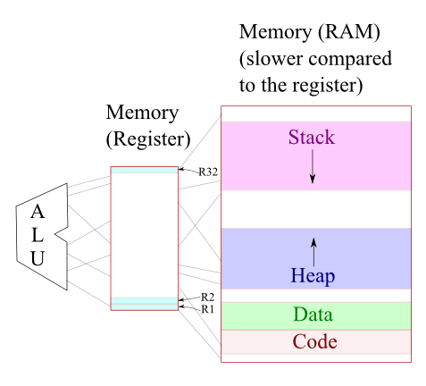
<br/>
<p>Suppose we have:</p>
<pre>
i = 17;
j = 20;
j += i;
</pre>

<br/>
<p>i = 17 is loaded into R1 and j = 10 is loaded into R2. j+i is compiles into assembly code. Assembly code is the recipe that knows how to load i and j into register set and do the addition and the flush the result back out to the same space that j occupies. What probably happen is that i will be loaded into R1 and j will be loaded into R2. We can add 17 to 20 and store result into R3 because R1 and R2 are connected to ALU which is capable of addition for us, and after we synthesize the result at R3. We can flush it back out to j. Note that the whole process is composed of 4 steps:</p>
<ol>
<li>load i into register</li>
<li>load j into register</li>
<li>do the addition</li>
<li>store the result into j </li>
</ol>
<p>Let's write the code in mock assembly for the following code:</p>
<pre>
int i;
int j;
i = 10;
j = i + 7;
j++;
</pre>
<p>The compiles into the following mock assembly:</p>
<pre>
// i = 10;
M[R1+4] = 10;	// store operation

// j = i + 1;
R2 = M[R1+4];	// load operation
R3 = R2 + 7;	// ALU operation
M[R1] = R3;	// store operation

// j++;
R2 = M[R1]	
R2 = R2 + 1;
M[R1] = R2;
</pre>
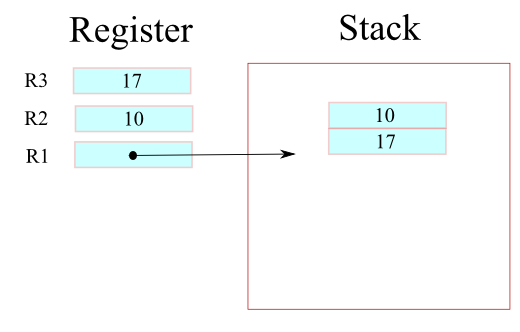
<br/>
<p>R1 is the special dedicated register which stores the base address of the variables. M stands for the RAM and the value of 10 is stored 4 byte offset from the base address as M[R1+4] and then loaded into R2. After the addition of 7 at ALU, the result will be stored in the register R3 and flushed into the memory space with the base address.</p>
<p>Let's do an example that does not always deal with 4-byte quantities.</p>
<pre>
int i;
short s1;
short s2;
</pre>
<p>So, the activation record looks like this:</p>
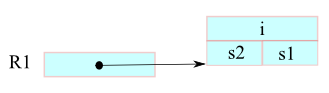
<pre>
i = 200;	=&gt;	[R1+4] = 200;
s1 = i;		=&gt;	R2 = M[R1+4];
			M[R1+2] = <font color="red">.2</font> R2;	// .2 two-byte
s2 = s1 + 1;	=&gt; 	R2 = <font color="red">.2</font> M[R1+1];
			R3 = R2 + 1;
			M[R1] = <font color="red">.2</font> R3;
</pre>
<br/>
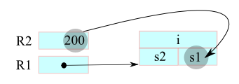
<br/>
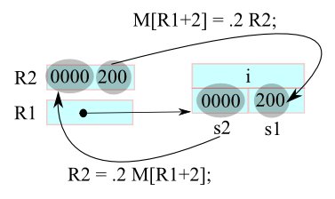
<br/>
<br/>
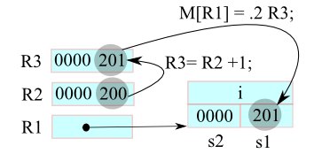
<br/>
<br/>
<br/><br/>
<br/>
<br/>
<br/>
</p>
<div>
    
<div class="custom-disqus">
<!-- Disqus -->
<div id="disqus_thread"></div>
<script>
    /**
     *  RECOMMENDED CONFIGURATION VARIABLES: EDIT AND UNCOMMENT THE SECTION BELOW TO INSERT DYNAMIC VALUES FROM YOUR PLATFORM OR CMS.
     *  LEARN WHY DEFINING THESE VARIABLES IS IMPORTANT: https://disqus.com/admin/universalcode/#configuration-variables
     */
     
/* Disabling Disqus 4/26/2017
    var disqus_config = function () {
        this.page.url = window.location.href;
        this.page.identifier = document.title;
    };
    
    (function() {  // REQUIRED CONFIGURATION VARIABLE: EDIT THE SHORTNAME BELOW
        var d = document, s = d.createElement('script');
        
        s.src = '//bogotobogocom.disqus.com/embed.js';  // IMPORTANT: Replace EXAMPLE with your forum shortname!
        
        s.setAttribute('data-timestamp', +new Date());
        (d.head || d.body).appendChild(s);
    })();
 Disabling Disqus */    
</script>
<noscript>Please enable JavaScript to view the <a href="https://disqus.com/?ref_noscript" rel="nofollow">comments powered by Disqus.</a></noscript>

<!-- Disqus ends here -->
</div>

<br>
<br>
<br>
<br></div>
          </div>
          <div class="col-sm-3 col-md-3 col-xs-3">
  	    <div class="g-person" data-width="1" data-href="//plus.google.com/111664369941456137911" data-rel="author">
  	    </div>
            <div class="resume">
              <p>Ph.D. / Golden Gate Ave, San Francisco / Seoul National Univ / Carnegie Mellon / UC Berkeley / DevOps / Deep Learning / Visualization</p>
            </div>
  	    <div>
                
<div class="skyscraper">
  <br>


<div class="skyscraper">

  <div class="bogo-paypal">
    <!-- Paypal Donate button -->
    <p><i>Sponsor Open Source development activities and free contents for everyone.</i></p>

    <form action="https://www.paypal.com/cgi-bin/webscr" method="post" target="_top">
    <input type="hidden" name="cmd" value="_s-xclick">
    <input type="hidden" name="encrypted" value="-----BEGIN PKCS7-----MIIHRwYJKoZIhvcNAQcEoIIHODCCBzQCAQExggEwMIIBLAIBADCBlDCBjjELMAkGA1UEBhMCVVMxCzAJBgNVBAgTAkNBMRYwFAYDVQQHEw1Nb3VudGFpbiBWaWV3MRQwEgYDVQQKEwtQYXlQYWwgSW5jLjETMBEGA1UECxQKbGl2ZV9jZXJ0czERMA8GA1UEAxQIbGl2ZV9hcGkxHDAaBgkqhkiG9w0BCQEWDXJlQHBheXBhbC5jb20CAQAwDQYJKoZIhvcNAQEBBQAEgYC0In+maN+zseQtRj6SJqP9kj2LLvKf0yFklTm01uHY7UwgB3YJ0MZwvi6iERXfh4x2/KVYyMzY6elATG68c3gd6gb0Pqca380dXCg2Xua8jlW0pTZ3UabUNkpYi0iIwMSUsvWKbIw9eX8cBljOrYU1CXNuk46c0Yz2J3lGG+xCZTELMAkGBSsOAwIaBQAwgcQGCSqGSIb3DQEHATAUBggqhkiG9w0DBwQI23eIgGIDbFqAgaDMolOA+os0Y06D0j9NgHZJahDCSSl3deolhu6gz8hNd0SKwNAMBDPd5LBjJ7v6QgReCprB9L2E6CVpXZwgyLnzPC/wHbQG0Qd9sc/CqbiFy2FaJodDtPbRS8mOh+aHph0pNXgZ2kRA8uqVGIRF5gc0d6wqx7+NrPK5FehCMWoGGTmfTTMlykPVQhwDAY8+QFNSbCnqih5GXX62XpkmMJWFoIIDhzCCA4MwggLsoAMCAQICAQAwDQYJKoZIhvcNAQEFBQAwgY4xCzAJBgNVBAYTAlVTMQswCQYDVQQIEwJDQTEWMBQGA1UEBxMNTW91bnRhaW4gVmlldzEUMBIGA1UEChMLUGF5UGFsIEluYy4xEzARBgNVBAsUCmxpdmVfY2VydHMxETAPBgNVBAMUCGxpdmVfYXBpMRwwGgYJKoZIhvcNAQkBFg1yZUBwYXlwYWwuY29tMB4XDTA0MDIxMzEwMTMxNVoXDTM1MDIxMzEwMTMxNVowgY4xCzAJBgNVBAYTAlVTMQswCQYDVQQIEwJDQTEWMBQGA1UEBxMNTW91bnRhaW4gVmlldzEUMBIGA1UEChMLUGF5UGFsIEluYy4xEzARBgNVBAsUCmxpdmVfY2VydHMxETAPBgNVBAMUCGxpdmVfYXBpMRwwGgYJKoZIhvcNAQkBFg1yZUBwYXlwYWwuY29tMIGfMA0GCSqGSIb3DQEBAQUAA4GNADCBiQKBgQDBR07d/ETMS1ycjtkpkvjXZe9k+6CieLuLsPumsJ7QC1odNz3sJiCbs2wC0nLE0uLGaEtXynIgRqIddYCHx88pb5HTXv4SZeuv0Rqq4+axW9PLAAATU8w04qqjaSXgbGLP3NmohqM6bV9kZZwZLR/klDaQGo1u9uDb9lr4Yn+rBQIDAQABo4HuMIHrMB0GA1UdDgQWBBSWn3y7xm8XvVk/UtcKG+wQ1mSUazCBuwYDVR0jBIGzMIGwgBSWn3y7xm8XvVk/UtcKG+wQ1mSUa6GBlKSBkTCBjjELMAkGA1UEBhMCVVMxCzAJBgNVBAgTAkNBMRYwFAYDVQQHEw1Nb3VudGFpbiBWaWV3MRQwEgYDVQQKEwtQYXlQYWwgSW5jLjETMBEGA1UECxQKbGl2ZV9jZXJ0czERMA8GA1UEAxQIbGl2ZV9hcGkxHDAaBgkqhkiG9w0BCQEWDXJlQHBheXBhbC5jb22CAQAwDAYDVR0TBAUwAwEB/zANBgkqhkiG9w0BAQUFAAOBgQCBXzpWmoBa5e9fo6ujionW1hUhPkOBakTr3YCDjbYfvJEiv/2P+IobhOGJr85+XHhN0v4gUkEDI8r2/rNk1m0GA8HKddvTjyGw/XqXa+LSTlDYkqI8OwR8GEYj4efEtcRpRYBxV8KxAW93YDWzFGvruKnnLbDAF6VR5w/cCMn5hzGCAZowggGWAgEBMIGUMIGOMQswCQYDVQQGEwJVUzELMAkGA1UECBMCQ0ExFjAUBgNVBAcTDU1vdW50YWluIFZpZXcxFDASBgNVBAoTC1BheVBhbCBJbmMuMRMwEQYDVQQLFApsaXZlX2NlcnRzMREwDwYDVQQDFAhsaXZlX2FwaTEcMBoGCSqGSIb3DQEJARYNcmVAcGF5cGFsLmNvbQIBADAJBgUrDgMCGgUAoF0wGAYJKoZIhvcNAQkDMQsGCSqGSIb3DQEHATAcBgkqhkiG9w0BCQUxDxcNMTUwOTA2MTYwNDAxWjAjBgkqhkiG9w0BCQQxFgQUuyx70nay4O6eJQs3x4WiAm4/7DkwDQYJKoZIhvcNAQEBBQAEgYAN7yS/34G8dBK6CfFf5g4rQk/H8s7D/aUmIzppGWOoXR7nZuXQo99wSBlQsPdeFtB+a+NNapf6lC4ibUTjgSpbu1gscGHH4Y+QtXl03bt5qgaSoFhZsCJKubwRHPHGHDGVx+tQmQ2DHk09lXjjL61FpB6iqkiFFvw4vfixsoeI6g==-----END PKCS7-----
    ">
    <input type="image" src="https://www.paypalobjects.com/webstatic/en_US/btn/btn_donate_pp_142x27.png" border="0" name="submit" alt="PayPal - The safer, easier way to pay online!">
    
    </form>
    <p><i>Thank you.</i></p>
    <p>- <a href="../about_us.html" target="_blank">K Hong</a></p>
    <!-- End of Paypal Donate button   -->
  </div>


  <script async src="http://pagead2.googlesyndication.com/pagead/js/adsbygoogle.js"></script>
  <!-- bogo_skyscraper -->
  <ins class="adsbygoogle"
       style="display:inline-block;width:160px;height:600px"
       data-ad-client="ca-pub-4716428189734495"
       data-ad-slot="5321096966"></ins>
  <script>
  (adsbygoogle = window.adsbygoogle || []).push({});
  </script>


  <br><br>


</div></div>


<!-- Place this tag after the last widget tag. -->
<script type="text/javascript">
        (function() {
          var po = document.createElement('script'); po.type = 'text/javascript'; po.async = true;
          po.src = 'https://apis.google.com/js/platform.js';
          var s = document.getElementsByTagName('script')[0]; s.parentNode.insertBefore(po, s);
        })();
</script>
  	    </div>
  	    <div class="side_menu">
                <br /><br />

<div class="skyscraper">
  <br>


<div class="skyscraper">

  <div class="bogo-paypal">
    <!-- Paypal Donate button -->
    <p><i>Sponsor Open Source development activities and free contents for everyone.</i></p>

    <form action="https://www.paypal.com/cgi-bin/webscr" method="post" target="_top">
    <input type="hidden" name="cmd" value="_s-xclick">
    <input type="hidden" name="encrypted" value="-----BEGIN PKCS7-----MIIHRwYJKoZIhvcNAQcEoIIHODCCBzQCAQExggEwMIIBLAIBADCBlDCBjjELMAkGA1UEBhMCVVMxCzAJBgNVBAgTAkNBMRYwFAYDVQQHEw1Nb3VudGFpbiBWaWV3MRQwEgYDVQQKEwtQYXlQYWwgSW5jLjETMBEGA1UECxQKbGl2ZV9jZXJ0czERMA8GA1UEAxQIbGl2ZV9hcGkxHDAaBgkqhkiG9w0BCQEWDXJlQHBheXBhbC5jb20CAQAwDQYJKoZIhvcNAQEBBQAEgYC0In+maN+zseQtRj6SJqP9kj2LLvKf0yFklTm01uHY7UwgB3YJ0MZwvi6iERXfh4x2/KVYyMzY6elATG68c3gd6gb0Pqca380dXCg2Xua8jlW0pTZ3UabUNkpYi0iIwMSUsvWKbIw9eX8cBljOrYU1CXNuk46c0Yz2J3lGG+xCZTELMAkGBSsOAwIaBQAwgcQGCSqGSIb3DQEHATAUBggqhkiG9w0DBwQI23eIgGIDbFqAgaDMolOA+os0Y06D0j9NgHZJahDCSSl3deolhu6gz8hNd0SKwNAMBDPd5LBjJ7v6QgReCprB9L2E6CVpXZwgyLnzPC/wHbQG0Qd9sc/CqbiFy2FaJodDtPbRS8mOh+aHph0pNXgZ2kRA8uqVGIRF5gc0d6wqx7+NrPK5FehCMWoGGTmfTTMlykPVQhwDAY8+QFNSbCnqih5GXX62XpkmMJWFoIIDhzCCA4MwggLsoAMCAQICAQAwDQYJKoZIhvcNAQEFBQAwgY4xCzAJBgNVBAYTAlVTMQswCQYDVQQIEwJDQTEWMBQGA1UEBxMNTW91bnRhaW4gVmlldzEUMBIGA1UEChMLUGF5UGFsIEluYy4xEzARBgNVBAsUCmxpdmVfY2VydHMxETAPBgNVBAMUCGxpdmVfYXBpMRwwGgYJKoZIhvcNAQkBFg1yZUBwYXlwYWwuY29tMB4XDTA0MDIxMzEwMTMxNVoXDTM1MDIxMzEwMTMxNVowgY4xCzAJBgNVBAYTAlVTMQswCQYDVQQIEwJDQTEWMBQGA1UEBxMNTW91bnRhaW4gVmlldzEUMBIGA1UEChMLUGF5UGFsIEluYy4xEzARBgNVBAsUCmxpdmVfY2VydHMxETAPBgNVBAMUCGxpdmVfYXBpMRwwGgYJKoZIhvcNAQkBFg1yZUBwYXlwYWwuY29tMIGfMA0GCSqGSIb3DQEBAQUAA4GNADCBiQKBgQDBR07d/ETMS1ycjtkpkvjXZe9k+6CieLuLsPumsJ7QC1odNz3sJiCbs2wC0nLE0uLGaEtXynIgRqIddYCHx88pb5HTXv4SZeuv0Rqq4+axW9PLAAATU8w04qqjaSXgbGLP3NmohqM6bV9kZZwZLR/klDaQGo1u9uDb9lr4Yn+rBQIDAQABo4HuMIHrMB0GA1UdDgQWBBSWn3y7xm8XvVk/UtcKG+wQ1mSUazCBuwYDVR0jBIGzMIGwgBSWn3y7xm8XvVk/UtcKG+wQ1mSUa6GBlKSBkTCBjjELMAkGA1UEBhMCVVMxCzAJBgNVBAgTAkNBMRYwFAYDVQQHEw1Nb3VudGFpbiBWaWV3MRQwEgYDVQQKEwtQYXlQYWwgSW5jLjETMBEGA1UECxQKbGl2ZV9jZXJ0czERMA8GA1UEAxQIbGl2ZV9hcGkxHDAaBgkqhkiG9w0BCQEWDXJlQHBheXBhbC5jb22CAQAwDAYDVR0TBAUwAwEB/zANBgkqhkiG9w0BAQUFAAOBgQCBXzpWmoBa5e9fo6ujionW1hUhPkOBakTr3YCDjbYfvJEiv/2P+IobhOGJr85+XHhN0v4gUkEDI8r2/rNk1m0GA8HKddvTjyGw/XqXa+LSTlDYkqI8OwR8GEYj4efEtcRpRYBxV8KxAW93YDWzFGvruKnnLbDAF6VR5w/cCMn5hzGCAZowggGWAgEBMIGUMIGOMQswCQYDVQQGEwJVUzELMAkGA1UECBMCQ0ExFjAUBgNVBAcTDU1vdW50YWluIFZpZXcxFDASBgNVBAoTC1BheVBhbCBJbmMuMRMwEQYDVQQLFApsaXZlX2NlcnRzMREwDwYDVQQDFAhsaXZlX2FwaTEcMBoGCSqGSIb3DQEJARYNcmVAcGF5cGFsLmNvbQIBADAJBgUrDgMCGgUAoF0wGAYJKoZIhvcNAQkDMQsGCSqGSIb3DQEHATAcBgkqhkiG9w0BCQUxDxcNMTUwOTA2MTYwNDAxWjAjBgkqhkiG9w0BCQQxFgQUuyx70nay4O6eJQs3x4WiAm4/7DkwDQYJKoZIhvcNAQEBBQAEgYAN7yS/34G8dBK6CfFf5g4rQk/H8s7D/aUmIzppGWOoXR7nZuXQo99wSBlQsPdeFtB+a+NNapf6lC4ibUTjgSpbu1gscGHH4Y+QtXl03bt5qgaSoFhZsCJKubwRHPHGHDGVx+tQmQ2DHk09lXjjL61FpB6iqkiFFvw4vfixsoeI6g==-----END PKCS7-----
    ">
    <input type="image" src="https://www.paypalobjects.com/webstatic/en_US/btn/btn_donate_pp_142x27.png" border="0" name="submit" alt="PayPal - The safer, easier way to pay online!">
    
    </form>
    <p><i>Thank you.</i></p>
    <p>- <a href="../about_us.html" target="_blank">K Hong</a></p>
    <!-- End of Paypal Donate button   -->
  </div>


  <script async src="http://pagead2.googlesyndication.com/pagead/js/adsbygoogle.js"></script>
  <!-- bogo_skyscraper -->
  <ins class="adsbygoogle"
       style="display:inline-block;width:160px;height:600px"
       data-ad-client="ca-pub-4716428189734495"
       data-ad-slot="5321096966"></ins>
  <script>
  (adsbygoogle = window.adsbygoogle || []).push({});
  </script>


  <br><br>


</div></div>

<!-- cplusplus_list_INNER.php -->
<br><br><br>
<h1>C++ Tutorials</h1>
   <a href="cpptut.html">C++ Home</a> 
   <br><br>
   <a href="../Algorithms/algorithms.html">Algorithms & Data Structures in C++ ...</a>
   <br><br>
   <a href="application_visual_studio_2013.html">Application (UI) - using Windows Forms (Visual Studio 2013/2012)</a>
   <br><br>
   <a href="autoptr.html">auto_ptr</a>
   <br><br>
   <a href="binarytree.html">Binary Tree Example Code</a>
   <br><br>
   <a href="blackjackQT.html">Blackjack with Qt</a>
   <br><br>
   <a href="boost.html">Boost - shared_ptr, weak_ptr, mpl, lambda, etc.</a>
   <br><br>
   <a href="Boost/boost_AsynchIO_asio_tcpip_socket_server_client_timer_A.html">Boost.Asio (Socket Programming - Asynchronous TCP/IP)...</a>
   <br><br>
   <a href="class.html">Classes and Structs</a> 
   <br><br>
   <a href="constructor.html">Constructor</a> 
   <br><br>
   <a href="cplusplus11.html">C++11(C++0x): rvalue references, move constructor, and lambda, etc.</a> 
   <br><br>
   <a href="cpptesting.html">C++ API Testing</a>
   <br><br>
   <a href="cplusplus_keywords.html">C++ Keywords - const, volatile, etc.</a>
   <br><br>
   <a href="CppCrashDebuggingMemoryLeak.html">Debugging Crash & Memory Leak</a>
   <br><br>
   <a href="../DesignPatterns/introduction.html">Design Patterns in C++ ...</a>
   <br><br>
   <a href="dynamic_cast.html">Dynamic Cast Operator</a>
   <br><br>
   <a href="eclipse_CDT_JNI_MinGW_64bit.html">Eclipse CDT / JNI (Java Native Interface) / MinGW</a>
   <br><br>
   <a href="embeddedSystemsProgramming.html">Embedded Systems Programming I - Introduction</a>
   <br><br>
   <a href="embeddedSystemsProgramming_gnu_toolchain_ARM_cross_compiler.html">Embedded Systems Programming II - gcc ARM Toolchain and Simple Code on Ubuntu and Fedora</a>
   <br><br>
   <a href="embeddedSystemsProgramming_GNU_ARM_ToolChain_Eclipse_CDT_plugin.html">Embedded Systems Programming III - Eclipse CDT Plugin for gcc ARM Toolchain </a>
   <br><br>
   <a href="exceptions.html">Exceptions</a> 
   <br><br>
   <a href="friendclass.html">Friend Functions and Friend Classes</a>
   <br><br>
   <a href="fstream_input_output.html">fstream: input & output</a>
   <br><br>
   <a href="function_overloading.html">Function Overloading</a>
   <br><br>
   <a href="functor_function_object_stl_intro.html">Functors (Function Objects) I - Introduction</a>
   <br><br>
   <a href="functor_function_object_stl_2.html">Functors (Function Objects) II - Converting function to functor</a>
   <br><br>
   <a href="functors.html">Functors (Function Objects) - General</a>
   <br><br>
   <br><br>
   <a href="Git/Git_GitHub_Express.html">Git and GitHub Express...</a>
   <br><br>
   <a href="google_unit_test_gtest.html">GTest (Google Unit Test) with Visual Studio 2012</a>
   <br><br>
   <a href="multipleinheritance.html">Inheritance & Virtual Inheritance (multiple inheritance) </a>
   <br><br>
   <a href="libraries.html">Libraries - Static, Shared (Dynamic)</a>
   <br><br>
   <a href="linked_list_basics.html">Linked List Basics</a>
   <br><br>
   <a href="linkedlist.html">Linked List Examples</a>
   <br><br>
   <a href="make.html">make & CMake</a>
   <br><br>
   <a href="gnumake.html">make (gnu)</a>
   <br><br>
   <a href="memoryallocation.html">Memory Allocation</a>
   <br><br>
   <a href="multithreaded.html">Multi-Threaded Programming - Terminology - Semaphore, Mutex, Priority Inversion etc.</a>
   <br><br>
   <a href="multithreading_win32A.html">Multi-Threaded Programming II -  Native Thread for Win32 (A) </a>
   <br><br>
   <a href="multithreading_win32B.html">Multi-Threaded Programming II -  Native Thread for Win32 (B) </a>
   <br><br>
   <a href="multithreading_win32C.html">Multi-Threaded Programming II -  Native Thread for Win32 (C) </a>
   <br><br>
   <a href="multithreading_win32.html">Multi-Threaded Programming II - C++ Thread for Win32</a>
   <br><br>
   <a href="multithreading_pthread.html">Multi-Threaded Programming III - C/C++ Class Thread for Pthreads</a>
   <br><br>
   <a href="multithreading_ipc.html">MultiThreading/Parallel Programming - IPC</a>
   <br><br>
   <a href="multithreaded4_cplusplus11.html">Multi-Threaded Programming with C++11 Part A (start, join(), detach(), and ownership)</a>
   <br><br>
   <a href="multithreaded4_cplusplus11B.html">Multi-Threaded Programming with C++11 Part B (Sharing Data - mutex, and race conditions, and deadlock)</a>
   <br><br>
   <a href="multithreadedDebugging.html">Multithread Debugging</a>
   <br><br>
   <a href="object_returning.html">Object Returning</a>
   <br><br>
   <a href="slicing.html">Object Slicing and Virtual Table</a>
   <br><br>
   <a href="opencv.html">OpenCV with C++</a> 
   <br><br>
   <a href="operatoroverloading.html">Operator Overloading I</a> 
   <br><br>
   <a href="operator_oveloading_self_assignment.html">Operator Overloading II - self assignment</a> 
   <br><br>
   <a href="valuevsreference.html">Pass by Value vs. Pass by Reference</a>
   <br><br>
   <a href="pointers.html">Pointers</a>
   <br><br>
   <a href="pointers2_voidpointers_arrays.html">Pointers II - void pointers & arrays</a>
   <br><br>
   <a href="pointers3_function_multidimensional_arrays.html">Pointers III - pointer to function & multi-dimensional arrays</a>
   <br><br>
   <a href="preprocessor_macro.html">Preprocessor - Macro</a>
   <br><br>
   <a href="private_inheritance.html">Private Inheritance</a>
   <br><br>
   <a href="../python/python_cpp_sip.html">Python & C++ with SIP</a>
   <br><br>
   <a href="RandomNumbers.html">(Pseudo)-random numbers in C++</a>
   <br><br>
   <a href="references.html">References for Built-in Types</a>
   <br><br>
   <a href="sockets_server_client.html">Socket - Server & Client</a>
   <br><br>
    <a href="sockets_server_client_QT.html">Socket - Server & Client with Qt (Asynchronous / Multithreading / ThreadPool etc.)</a>
   <br><br>
   <a href="stackunwinding.html">Stack Unwinding</a>
   <br><br>
   <a href="stl_vector_list.html">Standard Template Library (STL) I - Vector & List</a>
   <br><br>
   <a href="stl2_map.html">Standard Template Library (STL) II - Maps</a>
   <br><br>
   <a href="stl2_unorderd_map_cpp11_hash_table_hash_function.html">Standard Template Library (STL) II - unordered_map</a>
   <br><br>
   <a href="stl2B_set.html">Standard Template Library (STL) II - Sets</a>
   <br><br>
   <a href="stl3_iterators.html">Standard Template Library (STL) III - Iterators</a>
   <br><br>
   <a href="stl4_algorithms.html">Standard Template Library (STL) IV - Algorithms</a>
   <br><br>
   <a href="stl5_function_objects.html">Standard Template Library (STL) V - Function Objects</a>
   <br><br>
   <a href="statics.html">Static Variables and Static Class Members</a>
   <br><br>
   <a href="string.html">String</a> 
   <br><br>
   <a href="string2.html">String II - sstream etc.</a> 
   <br><br>
   <a href="assembly.html">Taste of Assembly</a>
   <br><br>
   <a href="templates.html">Templates</a>
   <br><br>
   <a href="template_specialization_function_class.html">Template Specialization</a>
   <br><br>
   <a href="template_specialization_traits.html">Template Specialization - Traits</a>
   <br><br>
   <a href="template_declaration_definition_header_implementation_file.html">Template Implementation & Compiler (.h or .cpp?)</a>
   <br><br>
   <a href="this_pointer.html">The this Pointer</a>
   <br><br>
   <a href="typecast.html">Type Cast Operators</a>
   <br><br>
   <a href="upcasting_downcasting.html">Upcasting and Downcasting</a>
   <br><br>
   <a href="virtual_destructors_shared_ptr.html">Virtual Destructor & boost::shared_ptr</a>
   <br><br>
   <a href="virtualfunctions.html">Virtual Functions</a>
   <br><br>
   <br><br>
   <i>Programming Questions and Solutions &darr;</i>
      <br><br>
       <a href="quiz_strings_arrays.html">Strings and Arrays</a>
       <br><br>
       <a href="quiz_linkedlist.html">Linked List</a>
       <br><br>
       <a href="quiz_recursion.html">Recursion</a>
       <br><br>
       <a href="quiz_bit_manipulation.html">Bit Manipulation</a> 
       <br><br>
       <a href="smallprograms.html">Small Programs (string, memory functions etc.)</a>
       <br><br>
       <a href="quiz_math_probability.html">Math & Probability</a>
       <br><br>
       <a href="quiz_multithreading.html">Multithreading</a>
       <br><br>
       <a href="google_interview_questions.html">140 Questions by Google</a> 
       <br><br>
       <br><br>
   <a href="../Qt/Qt5_Creating_QtQuick2_QML_Application_Animation_A.html">Qt 5 EXPRESS...</a>
   <br><br>
   <a href="../Win32API/Win32API_DLL.html">Win32 DLL ...</a>
   <br><br>
   <a href="cppNews.html">Articles On C++</a> 
   <br><br>
   <a href="C11/C11_initializer_list.html">What's new in C++11...</a> 
   <br><br>
   <a href="C11/1_C11_creating_thread.html">C++11 Threads EXPRESS...</a> 
   <br><br>
   <a href="../OpenCV/opencv_3_tutorial_imgproc_gausian_median_blur_bilateral_filter_image_smoothing.html">OpenCV...</a> 


<br />


  		
  	    </div>
          </div>
        </div>
      </div> <!-- / section -->
    </div>
  </div>

  <br>
<br>
<br>
<br>

<div class="custom-disqus">
<!-- Disqus -->
<!-- Disqus disabled Oct 17, 2016 
<div id="disqus_thread"></div>
<script>
    /**
     *  RECOMMENDED CONFIGURATION VARIABLES: EDIT AND UNCOMMENT THE SECTION BELOW TO INSERT DYNAMIC VALUES FROM YOUR PLATFORM OR CMS.
     *  LEARN WHY DEFINING THESE VARIABLES IS IMPORTANT: https://disqus.com/admin/universalcode/#configuration-variables
     */
     
    var disqus_config = function () {
        this.page.url = window.location.href;
        this.page.identifier = document.title;
    };
    
    (function() {  // REQUIRED CONFIGURATION VARIABLE: EDIT THE SHORTNAME BELOW
        var d = document, s = d.createElement('script');
        
        s.src = '//bogotobogocom.disqus.com/embed.js';  // IMPORTANT: Replace EXAMPLE with your forum shortname!
        
        s.setAttribute('data-timestamp', +new Date());
        (d.head || d.body).appendChild(s);
    })();
     
</script>
<noscript>Please enable JavaScript to view the <a href="https://disqus.com/?ref_noscript" rel="nofollow">comments powered by Disqus.</a></noscript>
---- Disable -->
<!-- Disqus ends here -->
</div>

<br>
<br>
<br>
<br>


<!-- footer starts here -->
<footer id="footer">
  <div class="container">
    <div class="row">
      <div class="col-md-4 widget">
        <h3 class="widget-title">Contact</h3>
        <div class="widget-body">
          <p>BogoToBogo<br>
            <a href="mailto:#">contactus@bogotobogo.com</a><br>
          </p>  
        </div>
      </div>

      <div class="col-md-4 widget">
        <h3 class="widget-title">Follow Bogotobogo</h3>
        <div class="widget-body">

          <!--
          <ul>
            <li><a href="https://www.facebook.com/KHongSanFrancisco" target="_unknown"><i class="fa fa-facebook"></i></a></li>
            <li><a href="https://twitter.com/KHongTwit" target="_unknown"><i class="fa fa-twitter"></i></a></li>
            <li><a href="https://plus.google.com/u/0/+KHongSanFrancisco/posts" target="_unknown"><i class="fa fa-google-plus"></i> </a></li>
          </ul>
          -->
             <h3>
             <a href="https://www.facebook.com/KHongSanFrancisco" target="_unknown"><i class="fa fa-facebook"></i></a> 
             <a href="https://twitter.com/KHongTwit" target="_unknown"><i class="fa fa-twitter"></i></a> 
             <a href="https://plus.google.com/u/0/+KHongSanFrancisco/posts" target="_unknown"><i class="fa fa-google-plus"></i> </a> 
             </h3>

        </div>
      </div>

      <div class="col-md-4 widget">
        <h3 class="widget-title"><a href="../about_us.html">About Us</a></h3>
        <div class="widget-body">
            <a href="mailto:#">contactus@bogotobogo.com</a><br>
            <br>
            Golden Gate Ave, San Francisco, CA 94115
          </p>  
        </div>
      </div>

    </div> 
  </div>
</footer>

<footer id="underfooter">
  <div class="container">
    <div class="row">
      
      <div class="col-md-6 widget">
        <div class="widget-body">
          <p>Golden Gate Ave, San Francisco, CA 94115 </p>
        </div>
      </div>

      <div class="col-md-6 widget">
        <div class="widget-body">
          <p class="text-right">
            Copyright &copy; 2016, bogotobogo<br> 
            Design: <a href="../index.html" rel="designer">Web Master</a> </p>
        </div>
      </div>

    </div>
  </div>
</footer>

  <!-- JavaScript libs are placed at the end of the document so the pages load faster -->
<script src="http://ajax.googleapis.com/ajax/libs/jquery/1.10.2/jquery.min.js"></script>
<script src="http://netdna.bootstrapcdn.com/bootstrap/3.0.0/js/bootstrap.min.js"></script>
<script type="text/javascript"
     src="http://cdn.mathjax.org/mathjax/latest/MathJax.js?config=TeX-AMS-MML_HTMLorMML">
</script>
<!-- D3.js -->
<script src="http://d3js.org/d3.v3.min.js" charset="utf-8"></script>

<!-- Google Analytics -->
<script type="text/javascript">
    var _gaq = _gaq || [];
    _gaq.push(['_setAccount', 'UA-12016988-2']);
    _gaq.push(['_trackPageview']);
    
    (function() {
    var ga = document.createElement('script'); ga.type = 'text/javascript'; ga.async = true;
    ga.src = ('https:' == document.location.protocol ? 'https://ssl' : 'http://www') + '.google-analytics.com/ga.js';
    var s = document.getElementsByTagName('script')[0]; s.parentNode.insertBefore(ga, s);
    })();
</script>

<!-- Google Analytics --> 
<!-- We need this for Analytics -->
<script>
  (function(i,s,o,g,r,a,m){i['GoogleAnalyticsObject']=r;i[r]=i[r]||function(){
  (i[r].q=i[r].q||[]).push(arguments)},i[r].l=1*new Date();a=s.createElement(o),
  m=s.getElementsByTagName(o)[0];a.async=1;a.src=g;m.parentNode.insertBefore(a,m)
  })(window,document,'script','http://www.google-analytics.com/analytics.js','ga');

  ga('create', 'UA-43017326-1', 'bogotobogo.com');
  ga('send', 'pageview');

</script>
  
<!-- Google+ -->
<script type="text/javascript" src="http://apis.google.com/js/plusone.js"></script>

</body>

<!-- Mirrored from www.bogotobogo.com/cplusplus/assembly.php by HTTrack Website Copier/3.x [XR&CO'2014], Mon, 11 Dec 2017 15:03:49 GMT -->
</html>

